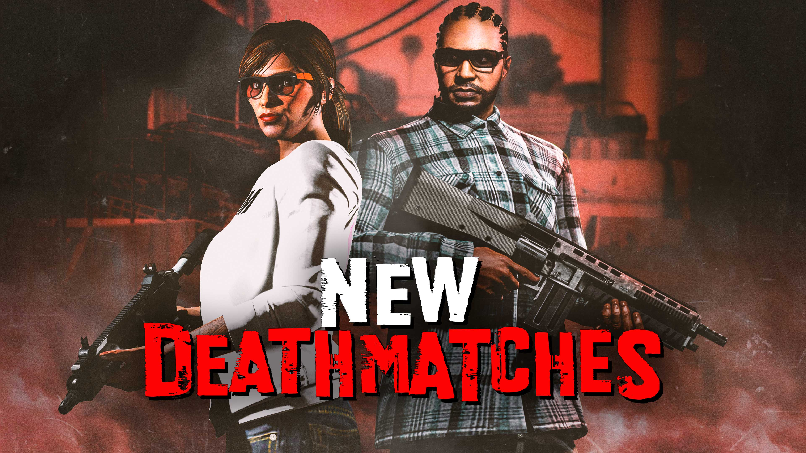
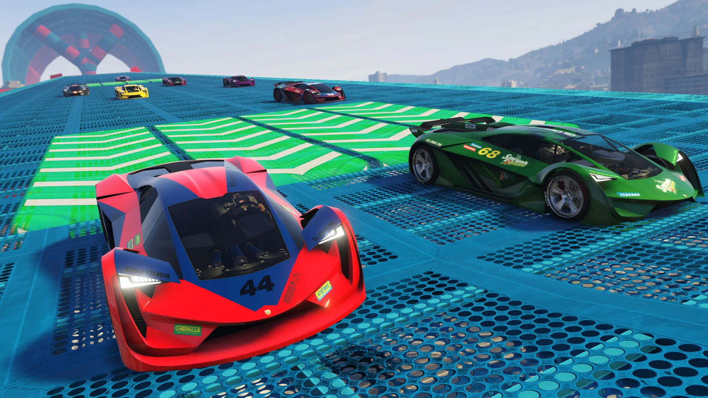
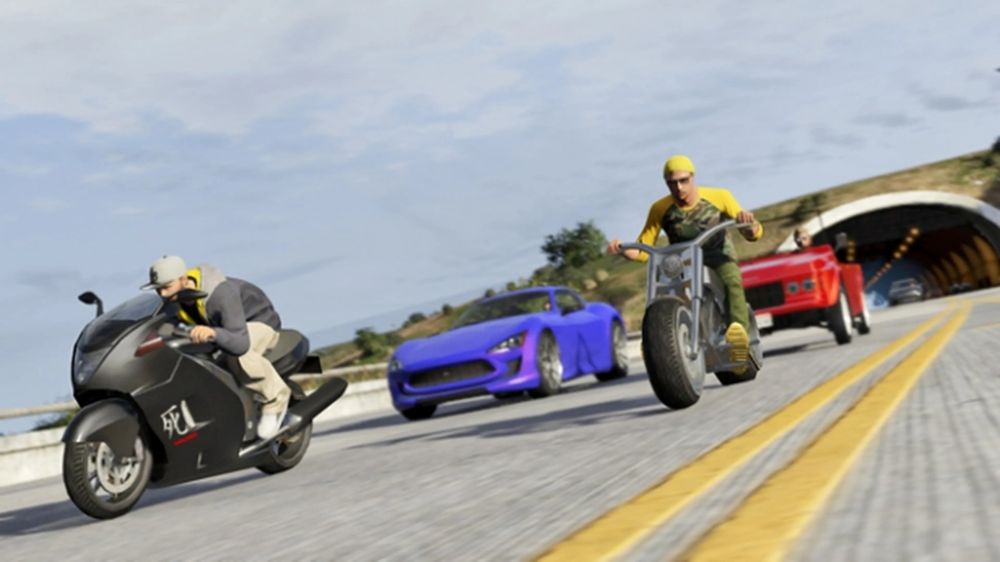

Principalmente en GTA Online existen dos tipos diferentes de las partidas a muerte en los que usamos las armas son los siguientes.
Partidas a muerte individuales: Los jugadores tienen como objetivo principal eliminar a los enemigos en un periodo de tiempo o alcanzar una cantidad de dinero por jugador eliminado.
Partidas a muerte por equipos: Los jugadores tienen como objetivo principal eliminar a los enemigos en un periodo de tiempo o alcanzar una cantidad de dinero por jugador eliminado pero esta vez se dividen en grupos.

Las carreras son eventos ocurridos en la Saga GTA, aparecen en Grand Theft Auto III, Grand Theft Auto Vice City, Grand Theft Auto San Andreas, Grand Theft Auto: Liberty City Stories, Grand Theft Auto IV,Grand Theft Auto: Episodes From Liberty City y Grand Theft Auto V. Consiste en que los vehiculos (pueden ser barcos, motos, coches etc...) tienen que pasar por distintos puntos de control y llegar los primeros a la meta.

Este modo es una variante de las partidas a muerte. Se puede jugar de 2 a 16 jugadores. Siguiendo las mismas reglas de la partida a muerte ,este modo puede hacerse de dos formas.
Último hombre en pie: Parecida a la partida muerte, se trata de matar a todos los oponentes antes de que ellos lo hagan. Solo se dispone de una vida. El jugador que sobreviva al ultimo gana.
Último hombre en pie: Parecida al modo Último hombre en pie, solo que la diferencia es que son dos equipos de máximo 8 jugadores cada uno. El equipo con mas sobrevivientes gana.Solo se dispone de una vida.

Las supervivencias son misiones que consisten en sobrevivir y eliminar oleadas de enemigos. Son un total de 10 oleadas (infinitas en las supervivencias de a partir de 2019) y pueden ser jugadas de 1 a 4 jugadores.